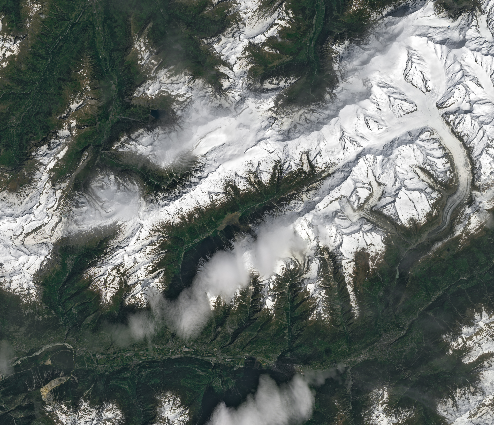

Glacier Collapse Buries Swiss Village
On the afternoon of May 28, 2025, an avalanche of rock and ice from the Birch Glacier (Birchgletscher) in southwestern Switzerland roared into the valley below. Debris buried most of the village of Blatten and dammed the Lonza, causing the river to flood. The event occurred after rock from a crumbling mountain peak built up on the glacier, which likely contributed to its ultimate collapse.
The OLI-2 (Operational Land Imager-2) on Landsat 9 captured this image (right) of avalanche debris in the Lonza river valley on May 29, 2025, the day after the landslide. For comparison, the left image, acquired with the OLI on Landsat 8, shows the same area approximately one year before the slide, on June 19, 2024.
The path of the debris flow descends the southern side of the valley from a peak called Kleiner Nesthorn toward Blatten. The event was so powerful that debris continued as much as 240 meters (790 feet) up the opposite valley wall. Rock and ice from the avalanche extended 2.5 kilometers (1.6 miles) down the valley, damming the river behind it and flooding part of the village.
Scientists have been monitoring the Birch Glacier since it released several damaging avalanches in the 1990s. While the steeper upper portions of the glacier have thinned in the past decade, the ice near the glacier’s end has thickened by up to 15 meters (50 feet), likely because it had been covered and insulated by rock. Many glaciers in the Alps, including some of the range’s largest, are melting and thinning.
Instability on the rocky slopes above the glacier became apparent in mid-May, prompting people to evacuate Blatten by May 19. Observers noted frequent rockfalls from Kleiner Nesthorn and a noticeable buildup of debris on the lower part of Birch Glacier. By May 27, the day before the catastrophic event, the glacier had sped up significantly, moving downhill at an estimated 10 meters (33 feet) per day, according to an ETH Zürich report.
Scientists are still investigating what factors contributed to the event. However, some think that the added pressure from fresh rockfall on the glacier caused melting at its base. An increase in meltwater can cause glaciers to lose friction with the ground and slide more easily. Areas of permafrost at higher elevations may have also played a role. If permafrost melts, more water can reach rock layers and destabilize slopes, but scientists note they cannot yet link permafrost with the rockfall in this event.
A glacial collapse of this magnitude is unusual for the Swiss Alps, researchers say, and it is relatively rare for massive slides to come from gently sloping glaciers. But similar rock-ice avalanches in Tibet, the Caucasus, and other mountainous regions in the past 25 years have garnered more scientific scrutiny because of their threats to communities.